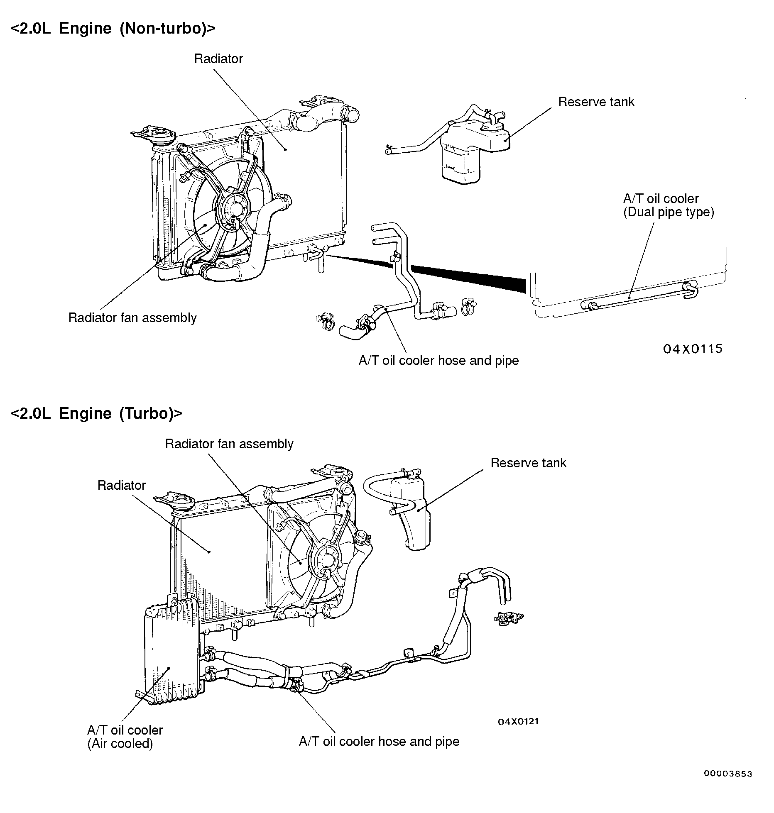
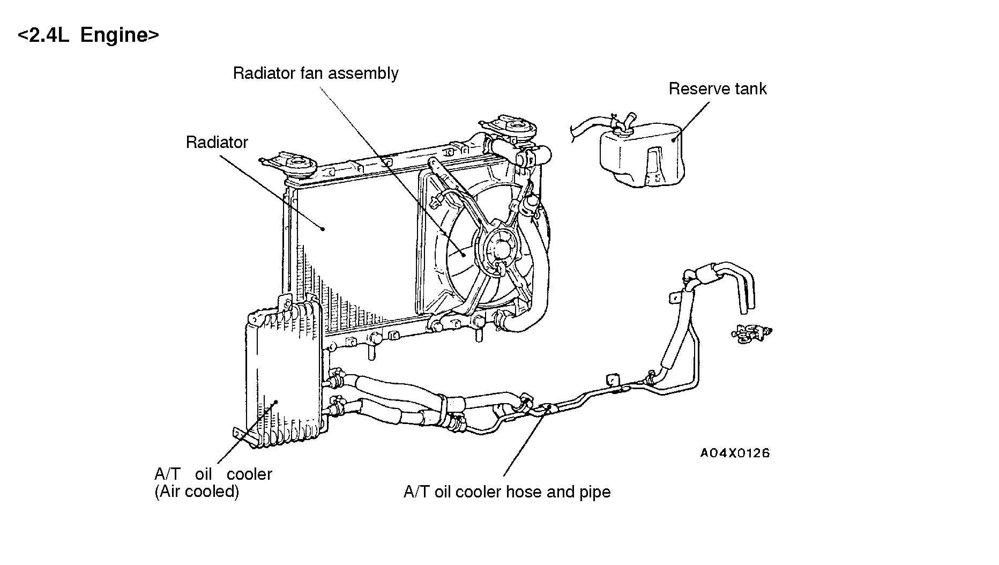

![[Previous]](https://mitsubishitechinfo.com/data/F24S/BUTTONS/fprevg.png)
![[Next]](https://mitsubishitechinfo.com/data/F24S/BUTTONS/fnextg.png)
GENERAL INFORMATION
The cooling system is designed to keep every part of the engine at appropriate temperature in whatever condition the engine may be operated.
The cooling method is of the water-cooled, pressure forced circulation type in which the water pump pressurizes coolant and circulates it throughout the engine. If the coolant temperature exceeds the prescribed temperature, the thermostat opens to circulate the coolant through the radiator as well so that the heat absorbed by the coolant may be radiated into the air.
The water pump is of the centrifugal type and is driven by the timing belt or the drive belt from the crankshaft.
The radiator is the corrugated fin, down flow type and is cooled by the electrical radiator fan.
CONSTRUCTION DIAGRAM

